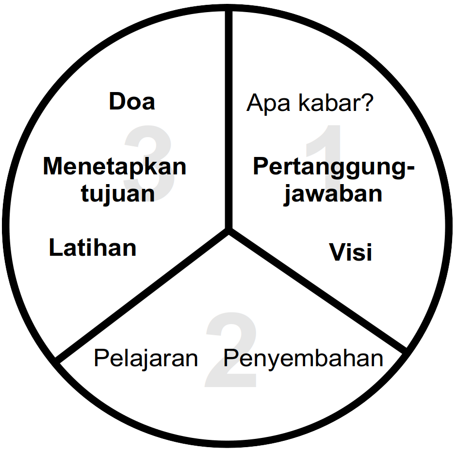

<h1>Tiga-Pertiga Proses</h1>
<div style="margin-right:25px;float:left">
</div>
<p><i>Untuk lebih lengkapnya tentang cara menggunakan diagram ini, lihat <a href="/Training_Meeting_Outline/id">Garis Besar Pelatihan</a>.</i>
</p>
<ol><li>Apa kabarmu?</li>
<li><b>Pertanggungjawaban</b></li>
<li><b>Visi</b></li>
<li>Penyembahan</li>
<li>Pelajaran</li>
<li><b>Latihan</b></li>
<li><b>Menetapkan tujuan</b></li>
<li><b>Doa</b></li></ol>
<p><br/>
</p><p><br/>
</p>